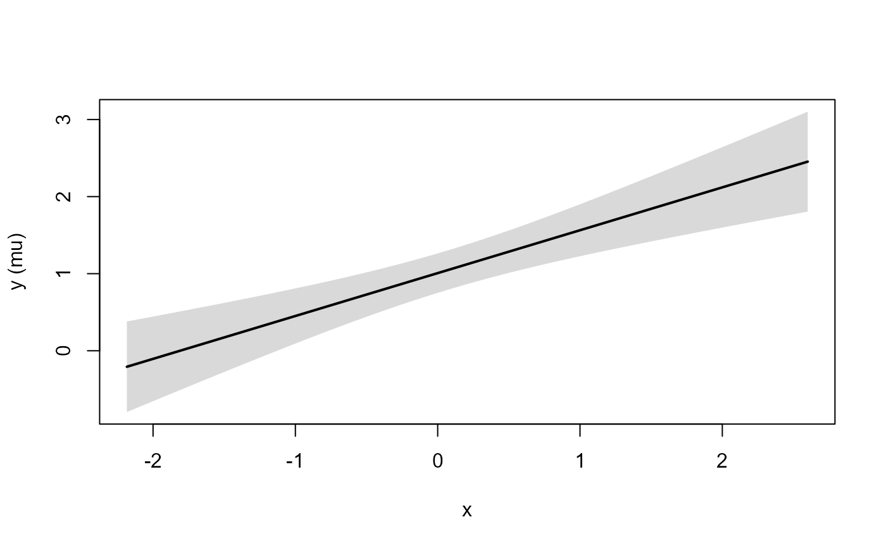
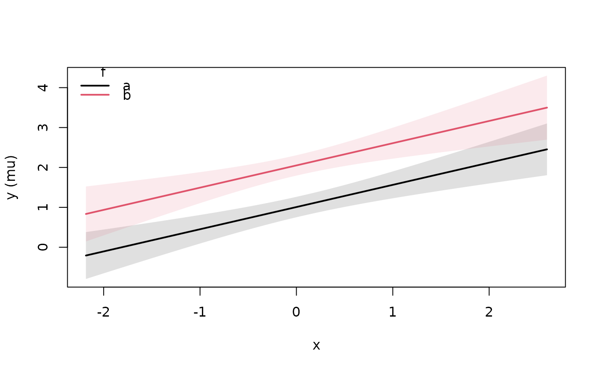

Conditional effects of predictors
conditional_effects.RdFor each requested effect, predicts over a grid of that predictor
with every other predictor held at a reference value (numeric: mean;
factor: first level; matrix covariate: column means) and random
effects excluded (re.form = NA). Confidence bands are Wald
intervals computed on the link scale and back-transformed. Smooth
terms are included, so this also covers what brms calls
conditional_smooths().
Arguments
- x
A
frmtmb_fit.- ...
Passed to
predict.frmtmb_fit().- effects
Character vector of variable names, or
"x:z"pairs; for a pair, the first variable is varied over its range while the second is held at its levels (factors) or at mean and mean plus or minus one SD (numeric). Default: every fixed-effect and smooth variable of the selected linear predictor.- resp, dpar
Response and distributional parameter, as in
predict.frmtmb_fit().- resolution
Number of grid points for a varied numeric predictor.
- prob
Coverage of the confidence bands (brms spelling).
- method
"epred"(default): Wald bands for the expected response."predict": prediction intervals - the epred point estimate with quantile bands fromndrawsresponses simulated from the family at each grid point (observation noise; random effects stay excluded, as in brms withre_formula = NA).- ndraws
Simulated responses per grid point for
method = "predict".- conditions
Named list overriding reference values, e.g.
list(x2 = 1, g = "b"); or a data frame whose rows define multiple condition sets (brms style), labeled by acond__column from its row names.- data
The original model data. Only needed when the model frame does not store a raw variable (e.g. a variable used only inside
poly()).
Value
A named list of data frames (one per effect) with the varied
variable(s) plus estimate__, se__ (link scale), lower__, and
upper__; printing it draws the plots.
Examples
set.seed(5)
dd <- data.frame(x = rnorm(120), f = factor(rep(c("a", "b"), 60)))
dd$y <- rnorm(120, 1 + 0.5 * dd$x + (dd$f == "b"), 1)
fit <- frm(bf(y ~ x * f) + gaussian(), data = dd)
ce <- conditional_effects(fit, effects = c("x", "x:f"))
plot(ce, ask = FALSE)


# prediction intervals instead of epred bands
ce_p <- conditional_effects(fit, effects = "x", method = "predict")